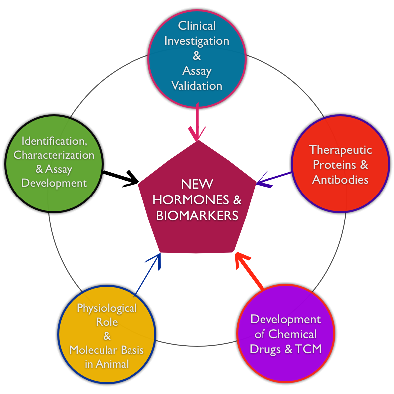

Research Directions
|
Research Directions Products |
The main focus of SKLPB is on “hormonal regulation of metabolism and cardiovascular homeostasis”. We conduct bench-to-bedside studies which range from identification of new hormones/biomarkers, in-depth investigation of the underlying mechanism, validation in animal models and humans, to development of diagnostic assays as well as therapeutics for obesity-related medical complications, by targeting new hormones/biomarkers identified in our laboratory.  |
Copyright © State Key Laboratory of Pharmaceutical Biotechnology. All Rights Reserved.